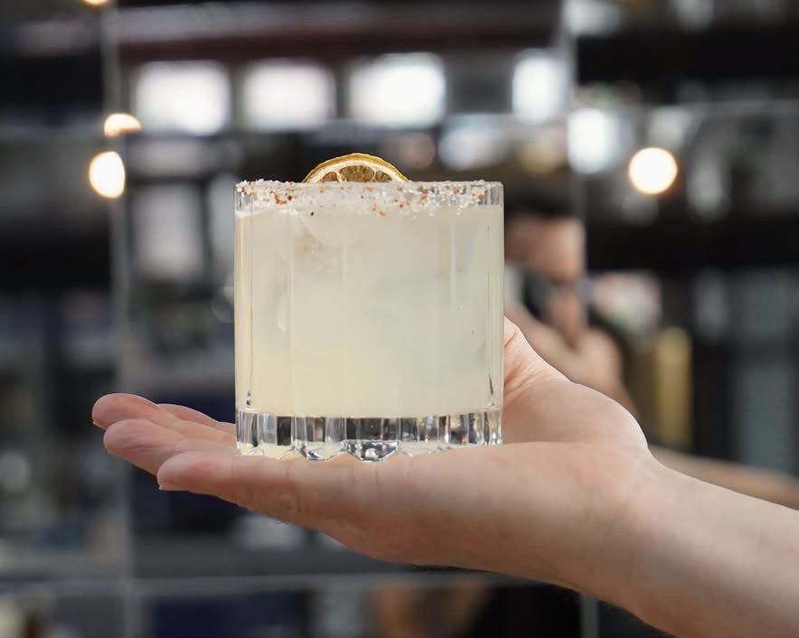

The Story
No sign. No apologies.
Welcome to Klandestina, your go-to casual Mexican restaurant!
Having been open in Harju Kallio for two and a half years, we faced the challenges of the pandemic roulette and all the issues it brought to everyone.
La Cantina Klandestina is our tribute to that distinctly Mexican feeling of not rigidly adhering to every rule and doing things our own way.
“We're lawful rebels who love food and take pride in providing friendly customer service.”
